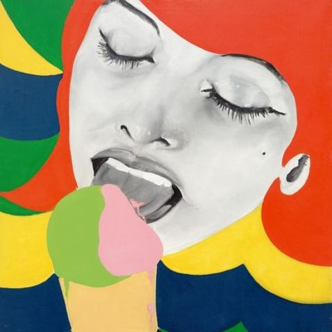
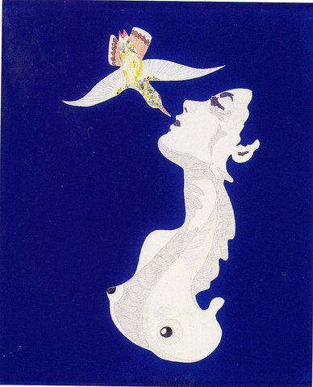
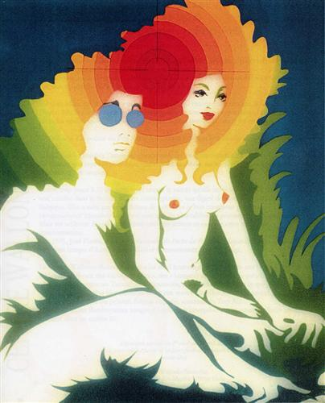
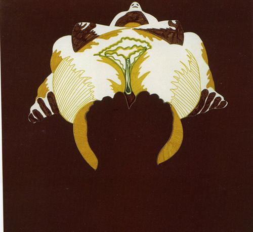
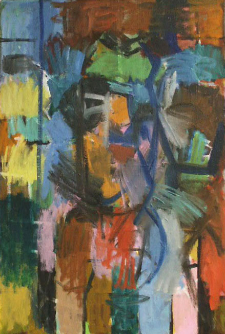
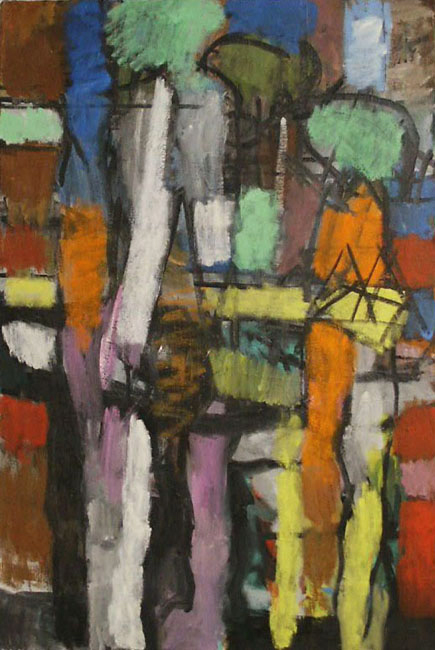

Thommy Johansson
Tema
Default
Härskarteknik-Del 1
Härskarteknik-Del 2
Härskarteknik-Del 3
Härskarteknik-Del 4
Narcissism
Narcissism-Varningssignaler
Grandios - Självbild
Narcissistiskt samhälle - Nina Björk
Populism - här för att stanna?
Prekariatet ett monster - Guy Standing
Tvingande internet
Torget
Landing
Blog
Fifa - Ian Buruma
Journal
Konst
Riksbyggen - Redovisning
Skuldbelagd
Islam - Ian Buruma
Borätter snålar
Riksbyggen
Alla artiklar
Inspirerande inlägg från personer med insikt. Bidragande orsak Mikael Wiehe, Emil Jensen, Jaques Werup och några andra.
Härskarteknik
Att härska -Inger Gunnarsson
Att härska - Umeå universitet
Att härska - Elaine Bergqvist
Att härska - Camilla Ländin
Att härska - Julia Collinius
Facebook
Utlagda inlägg
Fifa - Ian Buruma
Skuldbelagd - Asse Berg
Islam - Ian Buruma
Charlie Hebro
Torget - Per T Olsson
Klanvälde eller rättsstat
Narcissism
Narcissism-Varningssignaler
Grandios - självbild
Narcissistiskt samhälle Nina Björk
Populism - här för att stanna?
Gaslighting
Gaslighting - Del 2
Klimatet har fått spader
Kvinnoförtryck - Sara Mohammad
Problemformuleringsprivilegiet
Trollen spricker när...
Seriegalleri
Skånes Isseglarklubb - SIK
Sikarna
Sik - 2005
Psykopatiska chefer
Psykotisk chef
Psykotisk chef 2
Krokodill
Artister och texter
Nyliberalism - Mikael Wiehe
Emil Jensen
Hemstaden - Jaques Werup
Protokoll - SIK
Protokoll
Protokoll - SIK
Pop art -Ice Cream av Evelyne Axell Completion Date: 1964
 
Pop art av Evelyne Axell Completion
 
Konst av Magnus Wijkström
 